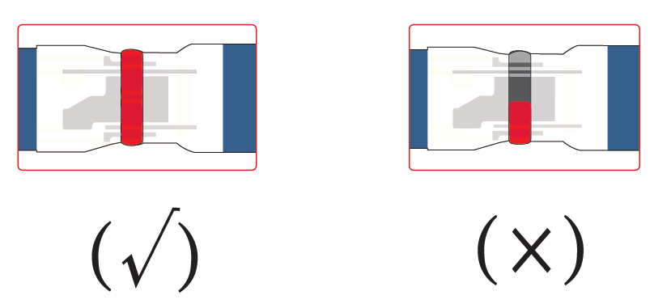
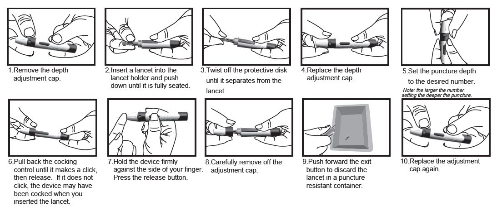
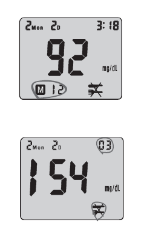

Glucometer Manual
AC-803 Blood Glucose Meter
User Manual
INTRODUCTION
Thank you for choosing AC-308 Blood Glucose Meter. The Meter associated with the AC-308 Blood Glucose Test Strip is designed to quantitatively measure the concentration of glucose in capillary whole blood by persons with diabetes or by healthcare professionals for monitoring glucose at home or in healthcare facilities.
Please read this manual before using your AC-308 Blood Glucose Meter. If you have any questions or requirements, please contact us or your local distributor.
Table of Contents
- ABOUT THE METER 3
- AC-308 BLOOD GLUCOSE METER AND LCD WINDOW 5
- AC-308 BLOOD GLUCOSE TEST STRIP 6
- SETTING METER PARAMETERS 7
- PREPARING FOR BLOOD SAMPLING 7
- CHECKING THE CODE 8
- PERFORMING A TEST WITH AC-308 BLOOD GLUCOSE TEST STRIP 9
- UNDERSTANDING YOUR TEST RESULT 11
- MEMORY RECALL 12
- CONTROL SOLUTION (OPTIONAL) 13
- METER SPECIFICATIONS 14
- TAKING CARE OF YOUR METER 15
- DISPOSING YOUR METER 19
- DISPLAYING MESSAGES AND TROUBLESHOOTING 20
ABOUT AC-308 METER
Intended UseThe AC-308 blood glucose meter is designed to quantitatively measure the concentration of glucose in capillary whole blood by people with diabetes or by healthcare professionals for monitoring blood glucose at home or in healthcare facilities. The device is an over-the-counter device indicated for professional use and for home use. The meter is for quantitative blood glucose testing with AC-308 blood glucose test strips.
About the MeterThe AC-308 blood glucose meter uses the biosensor technology in blood glucose monitoring to provide you with easy and comfortable testing. It requires only 0.8μL blood sample to complete the testing in just 5 seconds.
Important InformationThe AC-308 blood glucose meter is intended for in vitro diagnostic use with capillary whole blood. The meter should not be used for diagnosis of diabetes or for testing newborn infant (neonatal testing).
- Caution
- The user should not take any decision of medical relevance without first consulting with his or her medical professionals.
- Call your doctor immediately if you experience symptoms that are not consistent with your blood glucose test results.
- Severe dehydration or excessive water loss may cause false results. Call your doctor right away if you believe you are suffering from dehydration.
- A red blood cell count (hematocrit) that is either very high (over 65%) or very low (under 25%) may cause false result
- Operating temperature outside the range of 10°C to 40°C (50°F to 104°F) may affect the test results.
- Interferences: Acetaminophen, Dopamine, L-DOPA, Ibuprofen, Salicylate, Bilirubin, Creatinine, Cholesterol, Triglycerides, Uric acid, EDTA, Galactose, Gentisic acid, Glutathione, Haemoglobin, Heparin, Maltose, Methyl-DOPA, Tolbutamide, Tolazamide, Xylose, Pralidoxime Iodide and Icodextrin (when occuring in normal or therapeutic concentrations) do not significantly affect results. However, abnormal high concentrations of substances, such as Acetaminophen, Salicylate, Uric acid, and other reducing substances in blood may cause inaccurate high results.
- Intravenous administration of ascorbic acid which results in blood concentration of ascorbic acid >3 mg/dL will cause overestimation of blood glucose results.
- The diabetes who accept xylose absorption test please do not use the YourPal series Blood Glucose meter and test strips, because xylose could lead to high test results.
- The Package of the AC-308 Blood Glucose Meter contains:
- AC-308 Blood Glucose Meter
- Lancing Device
- 3V Lithium Battery (CR2032)
- User Manual
- Carrying Case
NOTE: PLEASE MAKE SURE THAT ALL PRODUCTS LISTED ON THE “CONTENTS” OF THE BOX ARE CONTAINED IN THE PACKAGE BEFORE USING THIS METER. IF YOU FIND ANY IMPERFECTION IN OUR PRODUCTS, PLEASE RETURN THE ENTIRE PACKAGE TO THE PLACE OF PURCHASE.
AC-308 BLOOD GLUCOSE METER AND LCD WINDOW Study the meter by reading the diagram.- DISPLAY : The large, easy to read display shows blood glucose results, messages, glucose results stored in memory, time and date.
- "M" BUTTON : Press to enter memory mode to recall the information stored in meter's memory and to increase values in the setting mode.
- STRIP SLOT : Holds a Test Strip or Check Strip in place when you perform blood glucose test or perform check tests
- ATTERY COMPARTMENT : Holds ONE 3V Lithium battery. The battery is not installed into meter when newly purchased. Please install the battery first before use.
- Meter Label : Label of the Meter.
- TEST RESULT
- DATE: Month/Date
- DAY AVG Appears when the meter is in the memory mode while recalling 7/14/21/28 day test averages.
- TIME: 24 hour period format.
- BATTERY SYMBOL: Appears when battery is low
- SYMBOL: “Keto” symbol appears when the blood glucose concentration is above 17.8 mmol/L (320 mg/dL). This simply suggests that a ketone test is recommended. Consult your healthcare professional about testing for ketones; “Hypo” symbol appears when the blood glucose concentration is below 3.9 mmol/L (70 mg/dL).
- mg/dL / mmol/L: Results are displayed as mg/dL or mmol/L
- SYMBOL: The test can be adjusted and stored into 3 types of test modes - BEFORE MEAL TEST (AC ), AFTER MEAL TEST (PC ), and CONTROL SOLUTION TEST (QC ).
- This display shows to ensure that all digits are working properly.
- appears when reading previous results
- CODE: Code appears to indicate code number when it's ready to test.
- THERMOMETER SYMBOL: Appears when ambient temperature is outside the acceptable range needed for testing.
- STRIP SYMBOL: Appears when the test strip is inserted and meter is ready for blood testing. Recap the vial immediately after removing test strips.
- Sampling Port: apply the blood to either side of strip.
- Detection Zone: make sure the part is filled up with blood to ensure the correct results.
- For example:

- Electrode End: insert the end of test strip into meter.
- IMPORTANT INFORMATION
- Do not use damaged test strips or test strips changed in any way. Use test strip immediately after removing it from the vial. Recap the vial immediately and close it tightly
- AC-308 Blood Glucose Test Strips are intended for in vitro diagnostic use with capillary whole blood or control solution. Results will not be accurate if used with plasma or serum samples.
- AC-308 Blood Glucose Test Strip can be damaged by heat and light. Keep them sealed in the original vial. Keep the vial in a cool, dry place below to 30℃/86℉and above 5℃/41℉.
- Do not use test strips beyond the expiration date indicated on the vial. The discard date for test strips is three (3) months after first opening the vial. Record the discard date on the vial, when you open a new one.
- For single use only.
- Do not carry loose test strips in your carrying case
SETTING METER PARAMETERS
Setting Date, TimeWhen the battery is installed the first time or every time it's replaced, the meter will automatically enter the setting mode. Please set the current time and date before you begin testing.
- To set the time and date
- Press "S" button for 2 seconds to turn on the meter. The meter will enter the setting mode automatically
- The year flashes at the sound of beep, for example for the year of 2017, number "17" will flash.
- Press "S" button to obtain the desired year.
- Press”M”button to confirm and shifts to the next setting.
- Repeat to set the month, date, hour and minute.
- After minute is set, the meter will display "OK" before turning off.
Prepare for Blood Sampling Adjustable
Lancing Device- Used with lancet to obtain a blood sample.
- Depth adjustment Cap
- Depth Selector
- Lancet Holder while disposing
- Cocking Control
- Release Button
- Exit Button
- Important Information
- Lancet is for single use only
- Keep lancing device and lancets clean.
- Use caution when removing the used lancet from the device and disposing.
- The lancing device and lancets are in conformity with MDD 93/42/EEC. Refer to product labels for contact information of
- Release Button
- Exit Button
ADJUSTABLE LANCING DEVICE
CHECKING THE CODE
- Before you perform your first blood glucose test or every time you open a new box of test strips, you need to verify that the meter “matches” the strips.
- Insert the test strip into the meter in the direction of the arrows. The meter turns on and beeps. The code number appears briefly
- Make sure the code number on the display matches the code number on the test strip container.
PERFORMING A TEST WITH AC-308 BLOOD GLUCOSE TEST STRIP
- UNDERSTANDING YOUR TEST RESULT-NORMAL BLOOD GLUCOSE RANGE
- The normal blood glucose range is 70 to 100 mg/dL (3.9 to 5.6 mmol/L) for fasting and less than 140 mg/dL (7.8 mmol/L) for two hours after meals for a non-diabetic adult. Consult your healthcare professionals to find out your target blood glucose value.
- If your blood glucose result seems unusually high or low, or inconsistent with your previous results, check the followings:
- Does the code number on the test strip vial match the code number on the meter?
- Was the blood sample applied to the test strip immediately after removing it from the vial?
- Was the size of the blood sample sufficient?
- Was the test strip vial cap tightly sealed?
- Were the test strips expired?
- Were the test strips stored away from extreme temperatures in very cold or hot weather
or from
areas of high humidity?
Then run a quality control check with your control solutions and a new test strip. If the control test result is within the acceptable range, review testing procedure and repeat your blood glucose test with a new test strip. If your blood glucose value is still inconsistent with your previous results, glucose trend, or how you feel, contact your doctor immediately for help.
- REFERENCE
- Stedman, Thomas Lathrop. Stedman’s Medical Dictionary, 28th Edition, 2006, pg. 2082
- D'Orazio et al.: IFCC Recommendation on Reporting Blood Glucose Results; Clinical
- MEMORY RECALL
- The AC-308 Blood Glucose Meter can automatically store up to 180 results
and automatically calculate
your average results of 7-, 14-, 21-, 28- days on both AC and PC.
When recalling the results, each single result appears from the latest to the earliest with
corresponding
time and date.

To Recall Results Stored in Memory - Turn meter on by pressing "M" button until you hear a beep sound. The first result displayed on the screen is your latest test result . 12 represents the 12th record of the overall results on this meter
- By pressing "M" button, you will see your test record from the most recent to the oldest.
- Press the "S" button to view the average results. "03" represents within the past 7 days there were 3 AC test results. Press the "S" button continuously to view the average results sequentially for 7, 14, 21 and 28 days
- Please press "M" button for 2 seconds to EXIT or put it aside for 3 minutes for auto shutdown.
- CONTROL SOLUTION (OPTIONAL)
- Control Solution is used to check if AC-308 Blood Glucose Meter and AC-308 Blood Glucose Test Strips are working together properly as a system. Control Solution can be used in two ways:
- To practice the test procedure.
- To make sure that the AC-308 Blood Glucose Meter and AC-308 Blood Glucose Test Strips are working together properly.
- IMPORTANT INFORMATION
- Do not use control solution beyond the expiration date indicated on the bottle label.
- The discharge date for control solution is 90 days after first opening. Record the discard date on the bottle, when you open a new bottle of control solution.
- Store the control solution closed at temperature range of 5ºC-30ºC (41ºF-86ºF).
PERFORM A CONTROL TEST
|
NOTE: REPEAT TEST IF THE RESULT FALLS OUTSIDE THE CONTROL RANGE ON THE CONTROL SOLUTION BOTTLE LABEL. IF YOU CONTINUE TO GET THE RESULT FALLING OUTSIDE THE CONTROL RANGE, YOUR METER AND STRIP MAY NOT BE WORKING PROPERLY. DO NOT USE THE SYSTEM TO TEST YOUR BLOOD UNTIL YOU GET A TEST RESULT THAT FALLS WITHIN THE CONTROL RANGE. CONSULT YOUR LOCAL DISTRIBUTOR FOR HELP.
METER SPECIFICATIONS
|
- Electromagnetic Compatibility
- It is the manufacturer's responsibility to provide equipment electromagnetic compatibility information to the customer or user.
- It is the user's responsibility to ensure that a compatible electromagnetic environment for the equipment can be maintained in order that the device will perform as intended.
- This product complies with the emission and immunity requirements of EN/IEC 61326-2-6 and EN/IEC 61326-1.
- This equipment has been designed and tested to CISPR 11 Class A. In a domestic environment it may cause radio interference, in which case, you may need to take measures to mitigate the interference.
- Before using the equipment, the electromagnetic environment should be
evaluated prior to
operation of it.
Do not use this equipment in close proximity to sources of strong electromagnetic radiation(e.g. unshielded intentional RF sources), as these can interfere with the proper operation
- TAKING CARE OF YOUR METER
- When the meter is dirty, please clean it by wiping gently with a cotton swab or cloth. Avoid use powder to clean meter.
- This instrument should not be subjected to extremes in temperatures, humidity, direct sunlight, shock or dust.
- REPLACING THE BATTERY
- The AC-308 blood glucose meter's battery life will vary depending on usage, so always keep a spare available.
- The battery can last about 18 months when testing 2 times a day, total 1000 tests.
- When the battery symbol appears on the meter display, it means battery is getting low. (FIG. A)
- You will still be able to test with low battery, but you should replace it as soon as possible. When battery symbol appears flashing on the display, the meter will no longer give results and you must replace the battery immediately. (FIG. B)
- NOTE:
- ·EVERY TIME WHEN YOU REPLACE THE BATTERY, THE METER WILL TURN ON AUTOMATICALLY ENTERING THE TIME/ DATE SETTING.
- PLEASE SET THE CURRENT TIME AND DATE BEFORE TESTING.
- PLEASE REMOVE THE BATTERY IF YOU WILL NOT USE THE METER OVER A LONG PERIOD OF TIME.
- CLEANING METER
- Caring for your AC-308 Blood Glucose Meter is easy - just keep it free of dust. If you need to clean it, please follow the guidelines below carefully to help you get the best performance :
- Do:
- Make sure the meter is turned off
- Gently wipe the meter surface with a soft cloth slightly dampened with 75% medical alcohol.
- Make sure that you squeeze off excess liquid from the cloth before you wipe the meter's surface
- Do Not:
- Get any moisture in the code chip slot or test strip slot
- Spray any cleaning solution directly onto the meter
- Put the meter under water or liquid
- Pour liquid into the meter
- STORAGE AND HANDLING
- Keep your meter free of dust. Protect it from extreme temperature and humidity
- DISPOSING YOUR METER
- During blood glucose measurement the meter itself may come into contact
with blood. Used
meters may carry a risk of infection. Please dispose your used meter properly after removing
the battery according to the regulations applicable in your country. For information about
correct disposal please contact your local council and authority.
The meter falls outside the scope of European Directive 2012/19/EU (Directive on waste electrical and electronic equipment (WEEE)).
- DISPLAYING MESSAGES AND TROUBLESHOOTING
- As listed below are problems that may appear with your AC-308 Blood Glucose Meter when performing a test. These messages will help you to identify certain problems. If you have any concerns or see any other error display, please contact us or the local distributor for help.
- NOTE:
If there is any error message displayed but not listed here, or your meter shuts down for no reason, you can reset the meter or replace the battery.
|